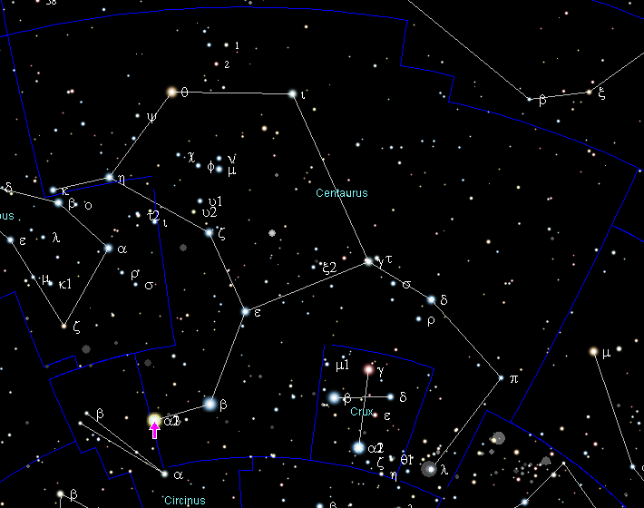
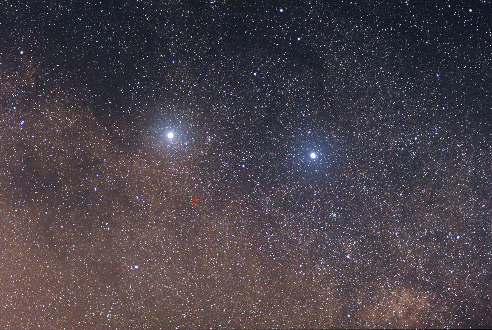
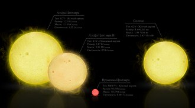
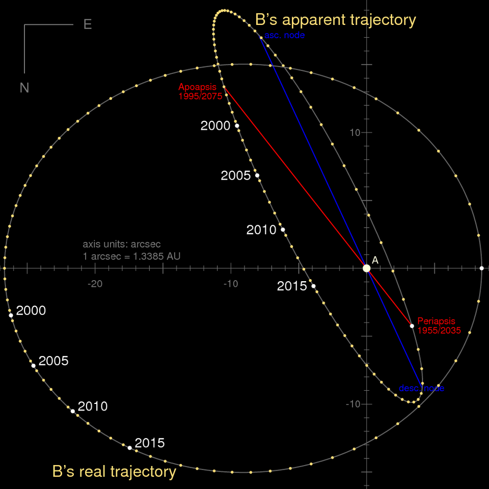
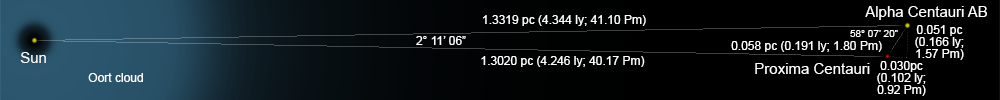
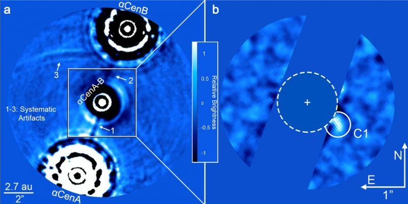
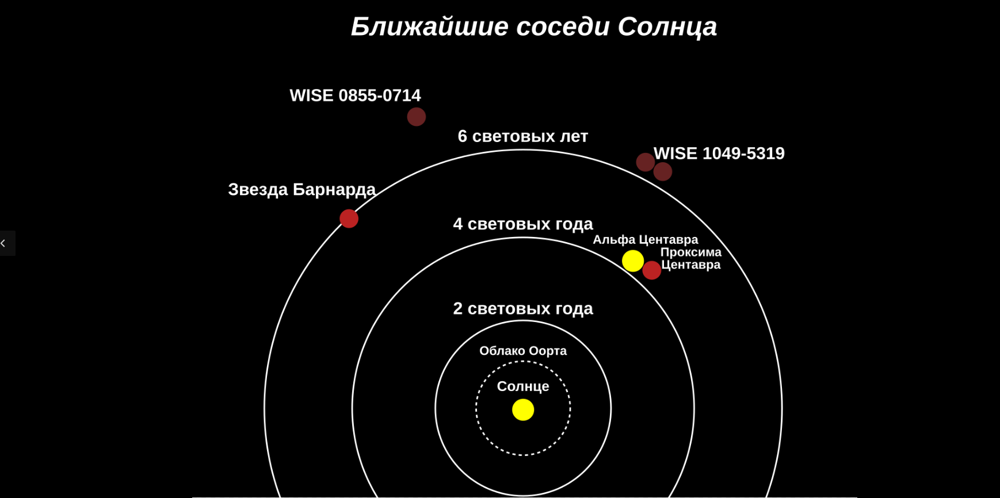

Материал из Википедии — свободной энциклопедии
|
 Кратная звезда |
|
| Наблюдательные данные (Эпоха J2000.0) |
|
|---|---|
| Прямое восхождение | 14ч 39м |
| Склонение | −60° 50′ |
| Расстояние | 1,346 ± 0,002 пк |
| Видимая звёздная величина (V) | −0,01 / +1,34 / +11,05 |
| Созвездие | Центавр |
| Астрометрия | |
| Лучевая скорость (Rv) | −21,6 км/c |
| Параллакс (π) | 747,23 ± 1,17 mas |
| Спектральные характеристики | |
| Спектральный класс | G2V |
| Показатель цвета | 0,71 / 0,88 / 1,97 |
| Физические характеристики | |
| Масса | 1,10 / 0,90 / 0,123 M⊙ |
| Радиус | 1,227 / 0,865 / 0,14 R⊙ |
| Температура | 5750 / 5250 / 2700 K |
А́льфа Цента́вра, α Центавра — тройная звёздная система в созвездии Центавра. Два компонента, солнцеподобные α Центавра А и α Центавра B, невооружённому глазу видны как одна звезда −0,27m, благодаря чему α Центавра является третьей по яркости звездой ночного неба. Третий компонент — невидимый невооружённым глазом красный карлик Проксима Центавра, или α Центавра C, который находится от яркой двойной звезды на угловом расстоянии 2,2°. Все три являются ближайшими к Солнцу звёздами (4,36 световых года), причём на данный момент Проксима Центавра несколько ближе остальных.

Несмотря на свою яркость и близость, альфа Центавра отсутствует на флаге Бразилии, где изображено 27 звёзд, видимых в Южном полушарии.
Две главные звезды α Центавра А и α Центавра B принадлежат главной последовательности и близки по характеристикам к Солнцу. α Центавра А имеет тот же спектральный класс (G2V) и близкую температуру (~5790 К), что и Солнце, однако она на 10 % массивнее его. Номинально, в зрелом возрасте звезда такой массы должна быть горячее и соответствовать классу G0V–G1V (~6000 К). Текущие «солнечные» параметры объясняются её более почтенным возрастом (5,3–6 млрд лет) и повышенной металличностью.
Основная пара звезд вращается вокруг общего центра с орбитальным периодом 79 лет. Их эллиптическая орбита эксцентрична, так что расстояние между A и B варьируется от 35,6 а. е., что примерно равно расстоянию между Плутоном и Солнцем, до 11,2 а. е., что примерно равно расстоянию между Сатурном и Солнцем.
Кинематические характеристики Проксимы Центавра отличаются от характеристик главных звёзд системы. Проксиму от α Центавра AB на небесной сфере отделяет угловое расстояние около 2°, что в 4 раза больше углового диаметра Луны. Проксима Центавра (лат. proxima — «ближайшая») находится примерно в 15 000 ± 700 а.е. (около 0,21 св. года) от двух центральных звёзд системы.
Координаты α Центавра А:
Координаты α Центавра B:

| α Центавра А | α Центавра B | Проксима Центавра | |
|---|---|---|---|
| Абсолютная звёздная величина | 4,38 | 5,71 | 15,53 |
| Спектральный класс | G2V | K1V | M5,5Ve |
| Светимость (в солнечных) | 1,519 | 0,5 | 6⋅10−5 |
| Диаметр (в солнечных) | 1,227 | 0,865 | 0,14 |
| Расстояние до Солнца, св. лет (1) | 4,36 | 4,22 | |
(1) (учитывается время, которое прошёл свет до Солнца, а не наоборот, и с учётом искривления света под воздействием центра нашей галактики и иных объектов)

Главные звёзды системы A и B слишком близки друг к другу, чтобы их можно было различить невооружённым глазом, поскольку угловое расстояние между ними варьируется между 1,7 и 22 угловыми секундами, но, благодаря вытянутости орбит, обе звезды легко различимы с помощью небольших (диаметром объектива порядка 5 см) телескопов.
В южном полушарии альфа Центавра образует внешнюю звезду Указателей, или Южных указателей (навигационный астеризм), названных так потому, что линия через бету Центавра (Хадар, Агену), в 4,5° западнее, указывает прямо на созвездие Южный крест. «Указатели» легко отличают настоящий Южный крест от Ложного креста.
Южнее широты −29°30' звезда альфа Центавра является незаходящей звездой. Среди городов, где она никогда не заходит за горизонт, — Сантьяго, Монтевидео, Буэнос-Айрес, Порту-Алегри, Кейптаун, Канберра, Сидней, Мельбурн. Так же как и Южный крест, эта звезда расположена слишком глубоко в Южном полушарии неба, чтобы наблюдаться из средних северных широт.

На март 2022 года в системе известны одна подтверждённая и три неподтверждённые экзопланеты. Большое количество детальной информации об этой системе ожидается в ближайшие годы, от её обследования новыми телескопами: уже вступившим в строй JWST, планируемым Толиман и другими.
У Альфы Центавра A в 2019 году телескопом VLT был обнаружен кандидат в экзопланеты Альфа Центавра A b в зоне обитаемости с орбитальным радиусом и периодом, примерно равными земным, подтверждение (или опровержение) существования которого ещё предстоит.

Проводимые наблюдения долгое время не могли обнаружить планеты в системе Альфы Центавра. 6 октября 2012 года астрономы Европейской южной обсерватории объявили об открытии планеты Альфа Центавра B b с массой, близкой к земной, на орбите вокруг α Центавра B. Планета была обнаружена методом измерения колебаний лучевых скоростей с помощью спектрографа HARPS.
В октябре 2015 года планета была «закрыта» (то есть признана несуществующей), так как было доказано, что 3,26-дневный RV-сигнал в измерениях женевской группы появился из-за особенностей математической обработки данных.
12 августа 2016 года в журнале Der Spiegel появилось сообщение об открытии планеты Проксима Центавра b в зоне обитаемости красного карлика Проксима Центавра. 24 августа 2016 года эта информация была подтверждена сотрудниками Европейской южной обсерватории.
Предполагаемые планеты могут обращаться отдельно вокруг α Центавра А или α Центавра B или Проксимы Центавра, или могут иметь большие орбиты вокруг двойной системы α Центавра АB[51][52]. Поскольку обе звезды приблизительно подобны Солнцу (например в возрасте и металличности), астрономы проявляют особенный интерес к поиску планет в этой системе. Несколько команд, заявивших о своих исследованиях в этом направлении, используют различные методы лучевой скорости или прохождения звёзд для исследования этой системы[41].
Компьютерное моделирование показало возможность формирования планеты в пределах 1,1 а. е. (160 млн км) от α Центавра B, и что орбита этой планеты может оставаться стабильной не менее 250 миллионов лет[53]. Тела вокруг звезды A могут обращаться на немного больших расстояниях, вследствие более сильной гравитации звезды А. Кроме того, отсутствие коричневых карликов и газовых гигантов вокруг А и В, наоборот, увеличивают шансы обнаружения планет земного типа[54]. По состоянию на 2002 год технологии не позволяли обнаружить планеты земной группы вокруг Альфы Центавра[54]. Но теоретические расчёты возможностей обнаружения методом лучевой скорости показали, что целенаправленные и регулярные исследования телескопом класса 1m[прояснить] могут с большой вероятностью обнаружить гипотетическую планету с массой в 1,8 массы Земли в зоне обитаемости α Центавра B в течение трёх лет[55].
По данным наблюдений космического телескопа Hubble в 2013 и 2014 годах за звездой альфа Центавра B, учёные предположили возможность существования у этой звезды планеты размером примерно с Землю, обращающейся вокруг Альфы Центавра B менее чем за 20,4 дня[56][57].
Одно из исследований 2012 года, проведённое астрономами из Эдинбургского университета, показывает, что у звезды α Центавра B обитаемая зона находится на расстоянии не менее 0,5 и не более 0,9 а. е. от звезды. При этом средняя температура поверхности гипотетической планеты в пределах этой зоны будет отличаться всего на 4—5 кельвинов в зависимости от расстояния до второй звезды α Центавра А. Моделирование показывает, что планета, обращающаяся вокруг α Центавра B, будет лишь раз в 70 лет приближаться к звезде α Центавра А на расстояние, при котором эта звезда будет влиять на климат планеты. В остальное время она влияния на климат планеты оказывать не будет. Также исследователи отмечают, что подобные сценарии возможны только при наличии на планете океанов, подобных земным. Если же планета будет представлять собой сухую пустыню, как Марс, то колебания температуры будут гораздо сильнее[58].
В 2019 году с помощью теплового инфракрасного коронографа NEAR (англ. Near Earths in the AlphaCen Region), установленного на одном из четырёх 8,2-метровых телескопов комплекса Очень большого телескопа Европейской южной обсерватории в Чили, в системе Альфа Центавра начался поиск планет в «обитаемой зоне» у звёзд A и B[59]. После почти 100 часов наблюдений спектрометром VISIR в инфракрасном диапазоне на длине волн менее 10 микрон и удаления ложных сигналов, на окончательном изображении выявили источник света «C1», который может быть экзопланетой Альфа Центавра A b размером с Нептун внутри обитаемой зоны или пылевым диском[60].
Предполагается, что Альфа Центавра станет одной из первых целей межзвёздных полётов. Преодоление расстояния между Солнцем и α Центавра при использовании современных технологий в разумные сроки невозможно. Однако возможности технологий солнечного паруса или ядерного ракетного двигателя могут позволить совершить такой перелёт за несколько десятилетий. В 2016 году было заявлено о начале подготовки полёта «наноспутника на лазерных парусах» (Breakthrough Starshot) на Альфу Центавра, который может преодолеть расстояние до ближайшей звезды за 15 лет.
Следующие звёздные системы находятся на расстоянии в пределах 10 световых лет от системы Альфы Центавра:

| Звезда | Спектральный класс | Расстояние, св. лет |
|---|---|---|
| Луман 16 AB | L7,5 / T0,5 | 3,68 |
| Солнце | G2 V | 4,37 |
| Звезда Барнарда | M4,0 V | 6,5 |
| Росс 154 | M3,5 Ve | 8,1 |
| Вольф 359 | M5,8 Ve | 8,3 |
| Сириус AB | A1 V / DA2 VII | 9,5 |
| Эпсилон Эридана | K2 Ve | 9,7 |
Поскольку данная звёздная система является ближайшей к нам, фантасты издавна связывали с ней начало эры межзвёздных перелётов.